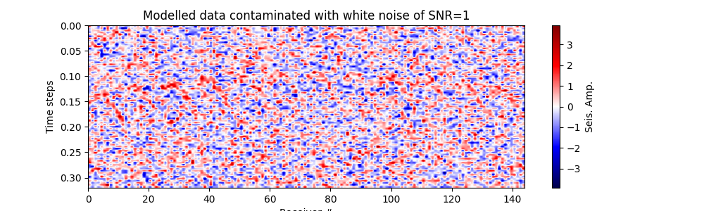
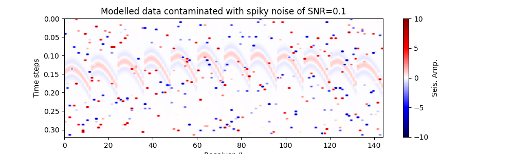

Note
Go to the end to download the full example code.
Diffraction Stacking Localisation - Simple scenario#
This tutorial illustrates how to perform source localisation using a diffraction stacking based on semblance.
In this tutorial we will consider a simple scenario where the subsurface is homogenous, and traveltimes are computed analytically as
\[t(\mathbf{x_r},\mathbf{x_s}) = \frac{d(\mathbf{x_r},\mathbf{x_s})}{v}\]
where \(d(\mathbf{x_r},\mathbf{x_s})\) is the distance between the source and receiver, and \(v\) is velocity (e.g. P-wave velocity \(v_p\)).
The waveforms are computed using the FD modelling.
Load all necessary packages#
import numpy as np
import matplotlib.pyplot as plt
from pylops.utils import dottest
from pylops.utils.wavelets import ricker
# Import modelling utils
from fracspy.modelling.kirchhoff import Kirchhoff
# Import diffraction stacking utils
from fracspy.location.utils import dist2rec
from fracspy.location.migration import semblancediffstack
# Import visualization utils
from fracspy.visualisation.traceviz import traceimage
from fracspy.visualisation.eventimages import locimage3d
Setup#
Velocity Model
nx, ny, nz = 50, 50, 50
dx, dy, dz = 4, 4, 4
x, y, z = np.arange(nx)*dx, np.arange(ny)*dy, np.arange(nz)*dz
v0 = 1000 # initial velocity
vel = np.ones([nx,ny,nz])*v0
print(vel.shape)
# Receivers
dr_xyz = 4*dx
grid_rx_locs = np.arange(dx, (dx*nx)-dx, dr_xyz)
grid_ry_locs = np.arange(dy, (dy*ny)-dy, dr_xyz)
rx, ry, rz = np.meshgrid(grid_rx_locs,
grid_ry_locs,
dz)
recs = np.vstack((rx.flatten(), ry.flatten(), rz.flatten()))
nr = recs.shape[1]
print(recs.shape)
# Microseismic sources
sx, sy, sz = [nx//4, ny//2, nz//2]
microseismic = np.zeros((nx, ny, nz))
microseismic[sx, sy, sz] = 1.
# Plot geometry
plt.figure(figsize=(8, 8)) # set size in inches
fig = plt.gcf()
ax = fig.add_subplot(111)
ax.set_aspect('equal')
plt.scatter(recs[0],recs[1])
plt.scatter(sx*dx,sy*dy, marker='*')
plt.title('Receiver Geometry: map view')
plt.xlabel('x')
plt.ylabel('y')
(50, 50, 50)
(3, 144)
Text(60.347222222222214, 0.5, 'y')
Generate synthetic data#
nt = 251
dt = 0.004
t = np.arange(nt) * dt
wav, wavt, wavc = ricker(t[:41], f0=20)
plt.figure()
plt.plot(wav)
# Initialize operator
Op = Kirchhoff(z=z,
x=x,
y=y,
t=t,
recs=recs,
vel=vel,
wav=wav,
wavcenter=wavc,
mode='eikonal',
engine='numba')
# check operator with dottest
_ = dottest(Op, verb=True)
# Forform forward modelling
frwddata_1d = Op @ microseismic.flatten().squeeze()
frwddata = frwddata_1d.reshape(nr,nt)
fig, ax = traceimage(frwddata, climQ=99.99)
ax.set_title('Point Receivers')
fig = ax.get_figure()
fig.set_size_inches(10, 9.5) # set size in inches
- 
- 
Dot test passed, v^H(Opu)=1958.2274611981386 - u^H(Op^Hv)=1958.2274611981184
Diffraction stacking#
# Define search grid
gx = x
gy = y
gz = z
# Prepare traveltimes
tt = 1 / v0*dist2rec(recs,gx,gy,gz)
print(tt.shape)
# Reshape tt into ttg
ttg = tt.reshape(nr, -1)
print(ttg.shape)
# Perform standard semblance-based diffraction stack
dstacked, hc = semblancediffstack(data=frwddata, n_xyz=[len(gx),len(gy),len(gz)], tt=tt, dt=dt, nforhc=10)
# Visualise image volume
fig,axs = locimage3d(dstacked, x0=sx, y0=sy, z0=sz)
(144, 50, 50, 50)
(144, 125000)
/home/runner/work/FraCSPy/FraCSPy/fracspy/visualisation/eventimages.py:12: UserWarning: This figure includes Axes that are not compatible with tight_layout, so results might be incorrect.
fig.tight_layout()
Total running time of the script: (1 minutes 7.062 seconds)